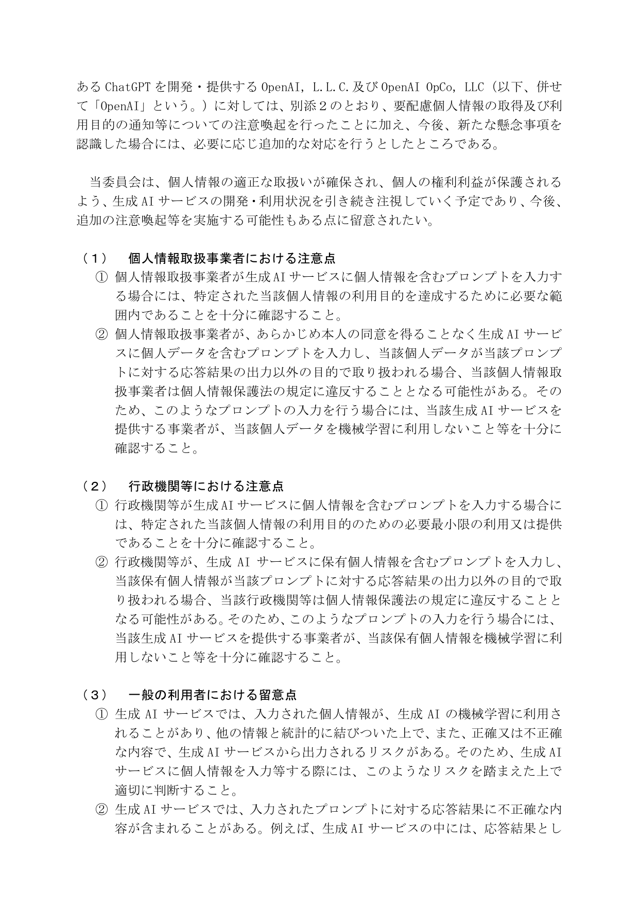
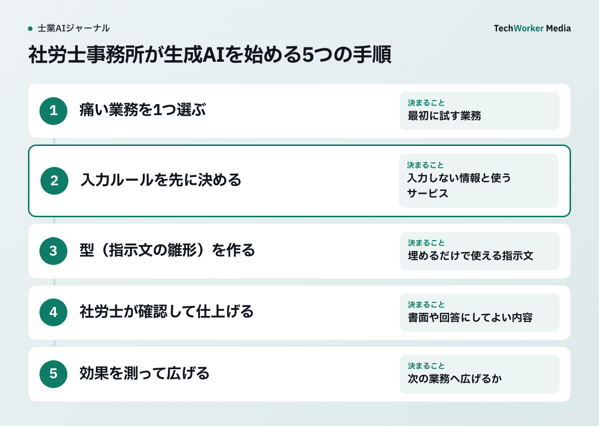

社労士のAI活用は、就業規則の差分の下書き、手続きの必要書類の整理、相談の論点整理まではAIに任せ、提出・回答・規程の改定は社労士が確定する形が基本です。2026年11月16日に全国社会保険労務士会連合会の公開ページを確かめた範囲では、社労士向けの生成AIの指針は見当たりませんでした。そこで、社会保険労務士法の守秘義務、個人情報保護委員会の注意喚起、AI事業者ガイドライン（第1.2版）をもとに、事務所のAI利用ルールの雛形を示します。
社労士向けのAI活用ガイドラインはありますか？
連合会の公開ページには、2026年11月16日時点で社労士向けの生成AIの指針は見当たりません。事務所のルールは、次の4つの公的な資料から作ります。
原文（日本語）「AI システム・サービスへ個人情報を不適切に入力することがないよう注意を払う」「AI システム・サービスに機密情報等を不適切に入力することがないよう注意を払う」
| 資料 | 書かれていること | 事務所のルールに写すこと |
|---|---|---|
| 社会保険労務士法 第21条・第27条の2 | 社労士と、開業社労士の使用人などの守秘義務 | 顧問先の情報をAIに入れる条件。職員にも同じルールを当てる |
| 個人情報保護委員会「生成AIサービスの利用に関する注意喚起等」（2023年6月2日） | 個人情報を入れる前に、利用目的の範囲内か、応答以外の目的で扱われないかを確かめる | 使ってよいAIサービスと、その契約・設定の確認 |
| 総務省・経済産業省「AI事業者ガイドライン（第1.2版）」第5部（2026年3月31日） | AIの利用者は、個人情報や機密情報を不適切に入力しない。出力の精度とリスクを理解して使う | 入力してはいけない情報と、出力の確認の手順 |
| 連合会の「SRPⅡ認証制度」 | 個人情報を保護する体制を整えた社労士事務所を、連合会が認証する | 認証を持つ事務所は、その規程にAIの扱いを書き足す |
連合会の会員向けページの資料は、この記事では確かめていません。所属する都道府県の社労士会から案内が出ている場合は、そちらを優先します。
顧問先の個人情報を入れる前に、何を確かめますか？
利用目的の範囲内か、入力した個人データをAIの提供者が応答以外の目的で扱わないかを確かめます。

労務の資料は、氏名を消しても、所属、役職、病歴、休職の時期の組み合わせで個人を特定できる場合があります。「匿名にしたつもり」で判断せず、入力に必要な項目を一つずつ選びます。個人情報保護委員会の注意喚起は、社労士業務の適法性を個別に保証するものではありません。社労士法上の守秘義務や委託先の管理も、別に確かめます。
事務所のAI利用ルールには、何を書けばよいですか？
使ってよいAIサービス、入力してよい情報、AIに任せない業務、出力の確認者の4つを最低限書きます。
| 項目 | 書く内容の例 |
|---|---|
| 使ってよいAIサービス | 入力が学習に使われないことを、契約か設定で確かめた法人向けのサービスだけ。個人のアカウントは使わない |
| 入力してはいけない情報 | 個人番号、業務に要らない健康情報、顧問先や従業員が特定できる組み合わせ |
| 入力してよい条件 | 必要な項目だけにし、氏名・会社名を置き換える。置き換えの手順を決める |
| 使ってよい業務 | 文案の下書き、資料の整理、確認事項の候補出し |
| AIに任せない業務 | 事実の認定、法的な評価、提出・回答・規程の確定 |
| 出力の確認 | 条文・通達を原典で確かめる人と、確かめた記録の残し方 |
| 顧問先への説明 | AIを使う業務と、社労士が確認する体制を、契約や説明資料で伝える |
| 見直しの時期 | 年に1回と、使うAIサービスや契約を変えたとき |
この表は、上の4つの資料をもとにTechWorkerが組んだ雛形で、公的に決められた項目ではありません。顧問先への説明は、AI事業者ガイドラインの第5部が、AIの利用者による関係者への情報提供と説明を示していることに沿っています。
就業規則・手続き・相談で、AIに何を任せられますか？
文章の下書き、資料の整理、確認事項の候補出しに使い、提出・回答・規程の改定は社労士が確定します。
| 場面 | AIの作業 | 社労士の確認 |
|---|---|---|
| 就業規則 | 現行の条文と改定案の差分、説明文の下書き | 法令・通達、事業所の実態、労使の手続き |
| 手続き | 必要な資料の候補、記載項目の整理 | 届出の要件、期限、本人確認、提出内容 |
| 相談対応 | 事実と未確認の点の整理、回答案 | 事実の認定、法的な評価、顧問先への最終の回答 |
事務所で最初に試すときは、どう進めますか？
件数が多く、誤りを公開や提出の前に戻せる作業を一つ選びます。

- 顧問先名や実データを使わない架空の例で、出力の型を決めます。
- 入力してはいけない情報と、使える契約・設定を確かめます。
- 根拠、未確認の点、確認者の欄を出力に入れます。
- 社労士が原典と事実を確かめ、差し戻した理由を記録します。
- 作成時間だけでなく、誤り、差し戻し、根拠なしの件数を比べます。
労務の仕事で、AIはどんな誤りをしますか？
条文の捏造、個別の事情の脱落、期限の取り違え、機微な情報の入れすぎが起きます。それぞれを別々に点検します。
就業規則の一般的な例が正しくても、会社の賃金制度や労使協定に合うとは限りません。相談の要約では、休職の経緯や医師の意見など、判断を変える条件が落ちます。手続きでは、日付を見つけることと期限を確定することを分けます。
使い始める前の試験には、古い通達、存在しない条番号、条件が矛盾する相談、第三者の健康情報を入れます。答えるべきでない場面で止まるか、社労士へ原文ごと引き継げるかを確かめます。
よくある質問
2026年11月16日に全国社会保険労務士会連合会の公開ページを確かめた範囲では、社労士向けの生成AIの指針は見当たりませんでした。事務所のルールは、社会保険労務士法の守秘義務、個人情報保護委員会の注意喚起、AI事業者ガイドライン（第1.2版）から作ります。
公開情報だけを使う通知文の言い換えや、匿名にした架空の事例での論点整理から始めます。誤りがあっても提出や回答の前に戻せる作業を選びます。
利用目的の範囲内か、入力した情報が応答以外の目的に使われないかを、使うAIサービスの契約と設定で確かめてからにします。入力は必要な項目だけにし、個人番号や業務に要らない健康情報は入れません。
任せません。条文・通達と事実関係を社労士が確かめ、提出・回答・規程の改定を確定します。AI事業者ガイドラインも、AIの出力の精度とリスクを理解したうえで使うことを利用者に求めています。
一律の義務を、この記事では確かめていません。AI事業者ガイドラインの第5部は、AIの利用者が関係者に合理的な範囲で情報を提供し、説明することを示しています。TechWorkerは、AIを使う業務と社労士の確認の体制を、契約や説明資料で伝えることを勧めます。
次の一歩は何から始めればよいですか？
上の利用ルールの表を事務所の実態に合わせて埋め、使ってよいAIサービスを1つに決めます。
AIサービスごとに、入力が学習に使われない契約と料金を比べたい方は、下の枠から主要4社の比較表と稟議書の雛形を受け取れます。
出典と確認範囲
確認日：2026年11月16日。利用ルールの雛形、業務の分担と試行の手順はTechWorkerの設計例で、導入成果の実測ではありません。連合会の会員向けページの資料は確かめていません。